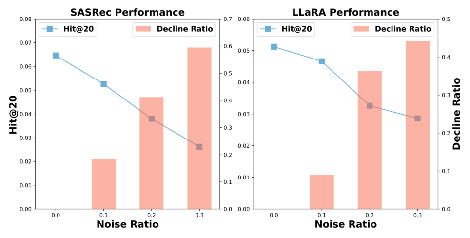

LLM4DSR: Leveraging Large Language Model for Denoising Sequential Recommendation (利用大语言模型为序列推荐去噪)
- 会议/期刊: TOIS 2026（预印本 arXiv:2408.08208v3, 2025-06）
- 作者与机构: Bohao Wang, Jiawei Chen, Yudi Wu, Sheng Zhou, Yan Feng, Chun Chen, Can Wang 等（浙江大学）；Feng Liu, Changwang Zhang, Xingyu Lou, Jun Wang（OPPO）
- 推荐链路定位: 召回前置的数据清洗层（模型无关、可插拔预处理，端到端不改动推荐器）
- 研究方向: 序列与会话推荐 / 自监督对比学习与交互去噪
- 论文原文: 论文原文链接
- 开源代码: 暂未开源
TL;DR (1分钟核心速览)
真实交互序列普遍被误点击、位置偏置、标题党等噪声污染，但噪声无标签、推荐损失本身也被污染，导致显式启发式去噪（HSD/STEAM）精度低且迁移性差。本文提出 LLM4DSR：先用"随机替换物品"构造自监督指令数据微调 Llama3-8B，让 LLM 学会"指出噪声项 + 生成替代项"；再用 token 级生成概率作为不确定度、以分位数阈值 \(\eta\) 只采纳高置信判决，最后用语义 grounding 把生成文本映射回真实物品完成序列改写。在 Games/Toy/Movie 三个 Amazon 数据集、全库排序协议下，对 SASRec/BERT4Rec/LLaRA 三种骨干均稳定优于所有基线（自然噪声 NDCG@20 最高 +11.1%，10% 人工噪声下最高 +24.8%）。
Background & Motivation (背景与核心矛盾)
- 主流范式: 序列去噪分两类——隐式（FMLP 频域滤波、CL4SRec 对比增广）在表征层压低噪声权重；显式（HSD 长短期兴趣不一致、STEAM 判别器+生成器、BERD 损失-不确定度）直接删改序列项。
- 前人局限: ①无监督信号：噪声标签缺失，只能用人工启发式先验或"下一项"推荐损失做监督，而后者本身已被污染；②误删即信息损失：显式方法只删不补，短序列场景下 HSD 甚至把 NDCG@20 从 0.0299 拉到 0.0246；隐式方法与骨干强耦合（无法用于 LLaRA 这类 LLM 推荐器），且噪声仍在参与表征。
- 核心洞察 (Key Insight): 序列表征需要"语义常识"，而 LLM 的开放世界知识恰好能补上无标签这一信息鸿沟——如用户历史多为喜剧片，偶现恐怖片即高度可疑；更关键的是 LLM 的生成能力可"补位"而非单纯"删除"，把误删损失转化为新增偏好信息。
- 本文切入点: 把去噪完全解耦为数据侧预处理：自监督微调让 LLM 会做去噪，不确定度模块让它只在高置信时动手，生成+grounding 让删掉的项有替代品。

Method (核心方法设计)
1. 整体框架 (Overall Architecture)
给定长度为 \(|S|\)的交互序列，先把每个物品的标题等文本描述拼成 prompt，送入经 LoRA 微调的 Llama3-8B；对其中的每个候选物品\(s_k\)，模型并不直接输出最终答案，而是计算"该物品被生成为噪声项"的 token 概率\(P_{noise}(s_k)\)，超过分位数阈值\(\eta\)者判为噪声；被判噪声的位置再触发一次生成式补全，得到建议项文本，经文本嵌入相似度 grounding 到真实物品集\(\mathcal{V}\) 上完成替换；改写后的干净序列被离线落盘，交由任意下游序列推荐器（SASRec/BERT4Rec/LLaRA）重训。整个流程不参与推荐损失的反传，是一条纯前置数据管线。
flowchart TD
A["原始序列 S + 物品文本描述"] --> B["自监督指令微调 Llama3-8B (LoRA)"]
B --> C["逐项计算 P_noise(s_k) 不确定度"]
C -->|P > η| D["生成建议项文本 + 语义 grounding"]
C -->|P ≤ η| E["保留原物品"]
D --> F["改写序列 S' 落盘"]
E --> F
F --> G["任意骨干 SASRec/BERT4Rec/LLaRA 重训"]2. 关键设计拆解 (Key Designs)
-
自监督去噪指令微调（制造监督信号）：痛点是无噪声标签。做法是从原序列随机挑一项 \(s_t\)用\(\mathcal{V}\)中随机物品\(\hat{s}_t\)替换得\(\hat{S}\)，构造"Input: 用户历史物品文本 / Output: Noise Items:\(text(\hat{s}_t)\), Suggested Items:\(text(s_t)\)"的指令对，用标准自回归损失微调： $\(\max_{\Phi}\sum_{(x,z)}\sum_{i=1}^{|z|}\log P_{\Phi}(z_i\mid x,z_{<i})\)$ 直觉：让模型同时学"判别异常项"和"还原真实兴趣项"两个互为逆的操作，比单纯判别更能逼出语义推理；仅采样 5000 条 prompt、LoRA 训练 50 epoch 即可激活该能力（未微调时 >40% 回复被判无意义）。
-
不确定度估计替代"直接读回复"（抗幻觉 + 支持多处噪声）：微调后模型每次仍只输出一个噪声项且可能编造不存在物品。作者改为审视生成概率而非生成结果： $\(P_{noise}(s_k)=P(z_{noise}=T_k\mid x)=\prod_{j=1}^{|T_k|}P(T_{k,j}\mid x,T_{k,<j}),\qquad y_k=\mathbb{I}\left[P_{noise}(s_k)>\eta\right]\)$ 工程上只算首 token 概率（物品标题首 token 近似唯一，后续 token 概率≈1）。直觉：这样可对序列中任意多个物品独立打分，且高置信项才动手，避免"全判噪声"式灾难；图 5 证实 \(P_{noise}\) 分位越高，噪声占比单调上升。
-
生成式补全 + Grounding 与训练目标：对每个噪声项 \(s_k\) 用
<User Interactions, Noise Items: text(s_k), Suggested Items:>触发补全，得建议文本；因可能是不存在的假物品，用语义相似度落地到真实物品： $\(s'_k=\arg\min_{v_i\in\mathcal{V}} f\left(text_{suggest},\,text(v_i)\right)\)$ 不引入额外推荐侧损失；负采样策略无（纯监督式改写）；推理开销 = 每条序列 \(|S|\)次前向（可用首-token 近似降低）+ 噪声位置每处一次生成，另有全局b∈{1,2,3}限制单序列最多改\(b\) 项以防过修。
Experimental Setup & Evaluation Protocol (实验设置与评估协议)
- 数据集与预处理: 三个 Amazon 域，沿用 LLaRA 的预处理——序列长度 >11 者以窗口 11 滑窗切分（Movie 随机保留 20,000 物品）。Movie 的 #Sequences(121,690) 大于 #Users(9,329)，即一用户多序列。
| 数据集 | #Users | #Items | #Interactions | #Sequences | 密度 |
|---|---|---|---|---|---|
| Games | 54,955 | 17,256 | 494,934 | 149,393 | 0.0522% |
| Toy | 19,124 | 11,758 | 165,247 | 47,931 | 0.0735% |
| Movie | 9,329 | 5,101 | 214,980 | 121,690 | 0.4518% |
- 数据划分与防穿越: 按时间戳升序做 8:1:1 比例划分（train/valid/test），非 Leave-One-Out。人工噪声在滑窗切分之前注入，避免跨序列信息泄漏。
- 排名评测协议: Full-Ranking（全库未交互排序），指标 HR@{20,50} 与 NDCG@{20,50}；为让 LLaRA 可算排序指标，作者对 LLaRA 追加 grounding 以支持全库打分（原版只取 Top-1）。
- 噪声设置: ①自然噪声（原始数据自带）；②人工噪声 \(\alpha\in\{10\%,20\%,30\%\}\)，每项以概率\(\alpha\) 被随机替换（仅此设置有噪声真值，可算 F1）。
- 对比基线: 显式 HSD、STEAM；隐式 FMLP、CL4SRec；骨干 SASRec / BERT4Rec / LLaRA（隐式法因耦合仅测前两者）。微调 Llama3-8B + LoRA，阈值 \(\eta\)在概率分位 [0,1] 上以 0.05 步长搜索，\(b\in\{1,2,3\}\)。
Key Experimental Results (实验关键数据)
1. 主实验对比 (Main Results)
自然噪声，NDCG@20（"None"即未去噪骨干本身）：
| 骨干 | 方法 | Games | Toy | Movie |
|---|---|---|---|---|
| SASRec | None | 0.0299 | 0.0190 | 0.0468 |
| SASRec | FMLP | 0.0297 | 0.0200 | 0.0488 |
| SASRec | CL4SRec | 0.0331 | 0.0201 | 0.0492 |
| SASRec | HSD | 0.0246 | 0.0121 | 0.0369 |
| SASRec | STEAM | 0.0233 | 0.0187 | 0.0475 |
| SASRec | LLM4DSR | 0.0315 (+5.4%) | 0.0208 (+9.5%) | 0.0505 (+7.9%) |
| BERT4Rec | None | 0.0351 | 0.0205 | 0.0584 |
| BERT4Rec | CL4SRec | 0.0359 | 0.0192 | 0.0587 |
| BERT4Rec | STEAM | 0.0373 | 0.0195 | 0.0548 |
| BERT4Rec | LLM4DSR | 0.0375 (+6.8%) | 0.0222 (+8.3%) | 0.0604 (+3.4%) |
| LLaRA | None | 0.0261 | 0.0224 | 0.0388 |
| LLaRA | STEAM | 0.0200 | 0.0182 | 0.0396 |
| LLaRA | LLM4DSR | 0.0290 (+11.1%) | 0.0241 (+7.6%) | 0.0409 (+5.4%) |
10% 人工噪声，NDCG@20（噪声可判别性更强，增益放大）：
| 骨干 | None | HSD | STEAM | LLM4DSR | Improv. |
|---|---|---|---|---|---|
| SASRec / Games | 0.0252 | 0.0198 | 0.0261 | 0.0292 | +15.9% |
| SASRec / Movie | 0.0390 | 0.0340 | 0.0401 | 0.0431 | +10.5% |
| BERT4Rec / Games | 0.0266 | 0.0288 | 0.0294 | 0.0316 | +18.8% |
| BERT4Rec / Toy | 0.0150 | 0.0152 | 0.0182 | 0.0183 | +22.0% |
| LLaRA / Games | 0.0202 | 0.0146 | 0.0207 | 0.0252 | +24.8% |
| LLaRA / Movie | 0.0323 | 0.0197 | 0.0325 | 0.0358 | +10.8% |
2. 消融实验 (Ablation Study)
SASRec 骨干，NDCG@20 / HR@20：
| 变体 | Game | Toy | Game+10%噪声 | Toy+10%噪声 |
|---|---|---|---|---|
| 原始骨干 None | 0.0299 / 0.0646 | 0.0190 / 0.0501 | 0.0252 / 0.0526 | 0.0139 / 0.0348 |
| w/o uncertainty | 0.0309 / 0.0648 | 0.0191 / 0.0501 | 0.0277 / 0.0572 | 0.0133 / 0.0361 |
| w/o completion（只删不补） | 0.0241 / 0.0566 | 0.0185 / 0.0478 | 0.0264 / 0.0548 | 0.0142 / 0.0359 |
| w/ popularity completion | 0.0239 / 0.0460 | 0.0156 / 0.0417 | 0.0241 / 0.0472 | 0.0106 / 0.0267 |
| LLM4DSR | 0.0315 / 0.0696 | 0.0208 / 0.0557 | 0.0292 / 0.0624 | 0.0152 / 0.0401 |
3. 关键实验发现 (Key Findings)
- 补全 >> 删除，且补全质量决定成败：去掉生成式补全后 Game 自然噪声 NDCG@20 由 0.0315 跌至 0.0241（−23.5%），比不做任何去噪（0.0299）还差；换成按热度随机补全更差（0.0239，HR@20 仅 0.0460），说明收益来自"语义对齐的替代项"而非"填补空位"这一动作本身。
- 不确定度模块是抗幻觉的保险丝，在强噪声下收益更明显：自然噪声下去掉该模块反而略升（Game 0.0299→0.0309），但在 10% 人工噪声 Toy 上从 0.0152 掉到 0.0133（−12.5%），即噪声越干净可辨，直接信任 LLM 生成结果的风险越大；同时 \(\eta\) 分位在 >0.7 区间表现稳定，Movie 上甚至呈"越低越稳"，因替换补偿了误删损失。
- 去噪应同时作用于训练与测试两侧，训练侧更关键：图 8 显示单独清洗训练集带来的提升大于单独清洗测试集，两者同时清洗取得最大增益；此外显式方法的噪声识别 F1 在 10%/20%/30% 三档噪声下 LLM4DSR 均居首，印证"LLM 语义知识 > 手工启发式"这一立论。
Highlights & Limitations (亮点、对比与审稿批判)
- 与代表作对比 (vs. Prior Work): 相比 STEAM（自建判别器+生成器，同样自监督但用小型序列模型、依赖推荐损失，跨骨干迁移时 Game 上 NDCG@20 从 0.0351 掉到 0.0233）、HSD（纯启发式不连续度，短序列严重误删）、CL4SRec/FMLP（隐式、与骨干强耦合且噪声仍在表征中），LLM4DSR 是唯一在三种异构骨干上全线正收益、且天然适配 LLM-based 推荐器的方案；与同期 LLMHD（CF 场景、直接用未微调 LLM 重估样本）相比，本文额外做了指令微调 + 不确定度 + 生成补全三件套。
- 可迁移亮点: ①"生成概率当置信度、分位数当阈值"的抗幻觉范式可直接搬到 LLM 做样本清洗、标签纠错、难负样本挖掘；②只算首 token 概率的近似、以及 grounding 回真实 item 集的做法，是低成本落地 LLM 打分的关键工程 trick。
- 审稿级局限批判: ①成本：每条序列需对 \(|S|\)个物品各做一次前向（即使只算首 token），再加噪声位置生成，比 HSD/STEAM 高一个数量级，论文自己承认需靠蒸馏下沉；②监督信号仍是人造的：微调用"随机替换"制造噪声，与真实噪声分布（位置偏置、标题党、群体从众）差异大，自然噪声下增益明显缩水（BERT4Rec/Movie 仅 +3.4%），且自然噪声设置无真值，无法验证"究竟删对了还是删错了"；③阈值\(\eta\) 采用数据集相关的概率分位搜索，跨域迁移需重调，缺少自适应方案；④表格中方法名混写为 "LLM4SRD"，且仅三个 Amazon 域、无线上 A/B，工业结论有限。
Rating (四维评分)
- 方法创新性 (Novelty): ⭐⭐⭐⭐ （首次把 LLM 作为序列推荐去噪器，自监督"替换-还原"任务与 token 级不确定度结合思路清晰，但各组件均为已有技术的巧妙拼装）
- 评估协议与实验扎实度 (Protocol & Experiments): ⭐⭐⭐⭐ （三数据集 × 三异构骨干 × 自然/人工双噪声 × 多噪声比例 + F1 识别率 + 训练/测试分离去噪 + 阈值敏感性，覆盖全面；扣分在无显著性检验、无开源代码）
- 写作与数学规范度 (Clarity & Rigor): ⭐⭐⭐⭐ （\(P_{noise}\) 的分解与首 token 近似有图 5 实证支撑，流程表述干净；但缺复杂度分析与方法名拼写不一致）
- 工业落地与复现价值 (Industrial & Practical Value): ⭐⭐⭐ （模型无关、可离线批量预处理是最大卖点，但 LLM 前向成本与阈值调参阻碍大规模在线部署，且未开源）